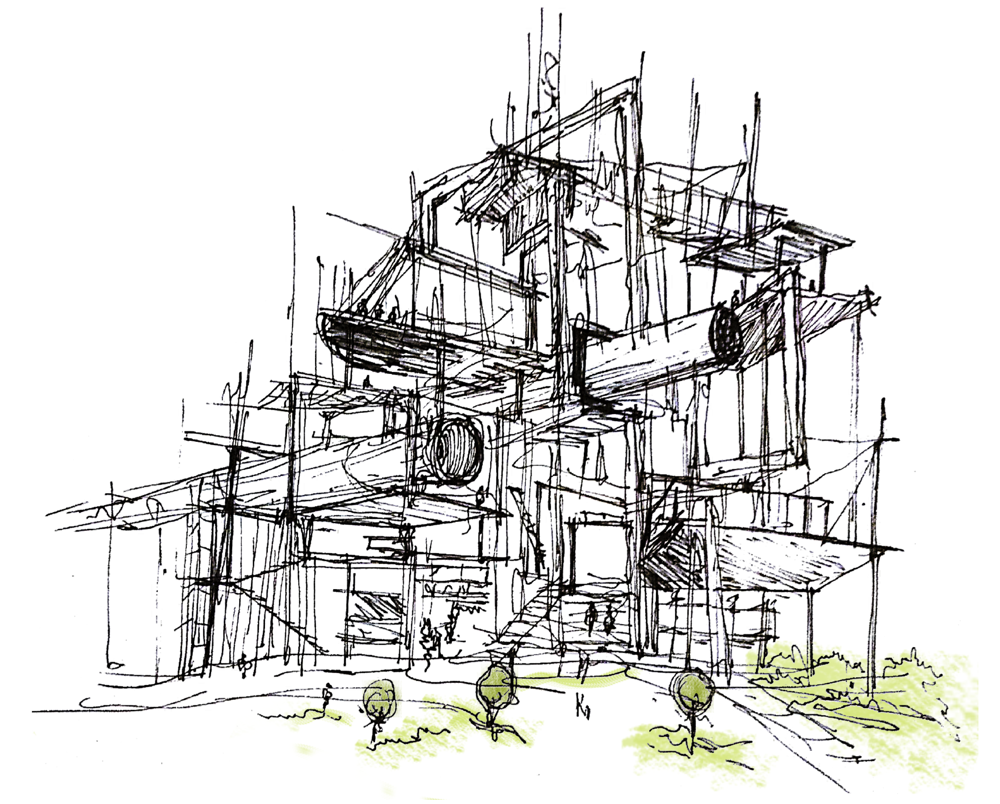

The New Normal, Hambach-Rhein River
Shortlisted, Ideenwettbewerb 2021 "Zukunftsszenarien Rheinisches Revier"
For almost 4 decades, 12.000 y.o. Hambach Forest lost 90 percent of its territory. And now the largest excavator of the world has a new goal: erasing 6 villages from the map. The necessity of energy production forces the inhabitants to migration and changing the social and cultural balance in Rheinische Revier. In this regard, the proposal focuses on creating a type of structure where people is accepting and following nature as it is.
